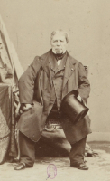
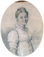

Jean Auguste Dominique Ingres

| Artist | Work Details | |||
|---|---|---|---|---|
|

Jean Auguste Dominique Ingres |
Title | Year | Home | |
|
Napoleon I on his Imperial Throne | 1806 | Musee de l'Armee, Paris | |
|  | Deallion portrait of Julie Forestier | 1806 | Fondation Custodia, Paris | |